Upptäck hela appen
Allt du behöver för din loge och dina möten.
LogeKoll samlar svenska Odd Fellow-institutioner, aktuella möten och personlig planering på ett ställe. Här kan du se hur appens olika delar fungerar – med skärmbilder direkt från appbeskrivningen.
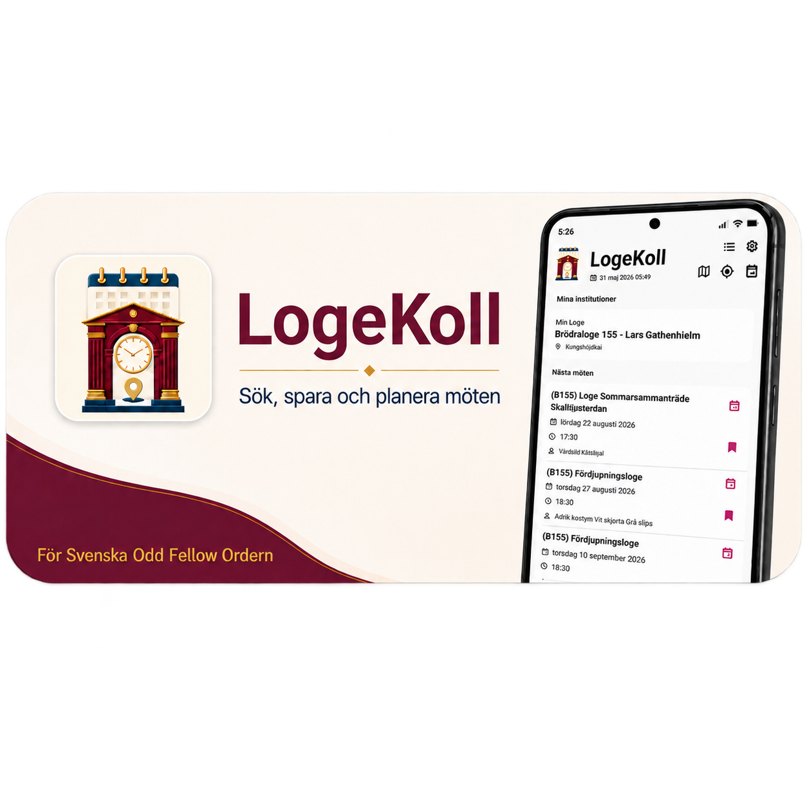
En samlad guide
Från första överblicken till nästa besök.
Du kan välja egna institutioner, hitta fler loger i Sverige, upptäcka möten i närheten, spara dem i en personlig möteslista och förbereda kalenderhändelser. Appen är utformad med välkända mobilfunktioner som listor, svepgester, karta och tydliga inställningar, så att den ska vara enkel även för ovana mobilanvändare.
Bilderna visar exempel från Word-dokumentets iPhone-vy. De kan skilja sig från utseendet på Android och från senare gränssnittsändringar. Tryck på en bild för att granska den i större format.
Börja där du hör hemma.
Få en överblick över de institutioner och möten som är viktigast för dig.
Min Loge och Mitt Läger
Välj Min Loge och Mitt Läger i Inställningar. De ligger sedan överst på startsidan med namn och ort. Om ingen hemmaloge har valts får du en tydlig uppmaning att göra ett val. Dina val hjälper också appen att göra sökningarna relevanta.
Kommande möten – lista eller kalender
Under de egna institutionerna visas nästa möten. Mötesraderna kan innehålla titel, datum, starttid och klädsel, beroende på vilka uppgifter som finns. Du kan öppna telefonens kalender från mötesraden och se med ett bokmärke om ett möte redan finns i Mina möten.
- Välj hur sökalternativen visas: som Lista på sidan eller som Ikoner i sidhuvudet.
- Listläget visar tre kommande möten direkt; ikonläget kan visa upp till fem.
- Se datum för senaste databasuppdatering och dra nedåt för att hämta ny information.
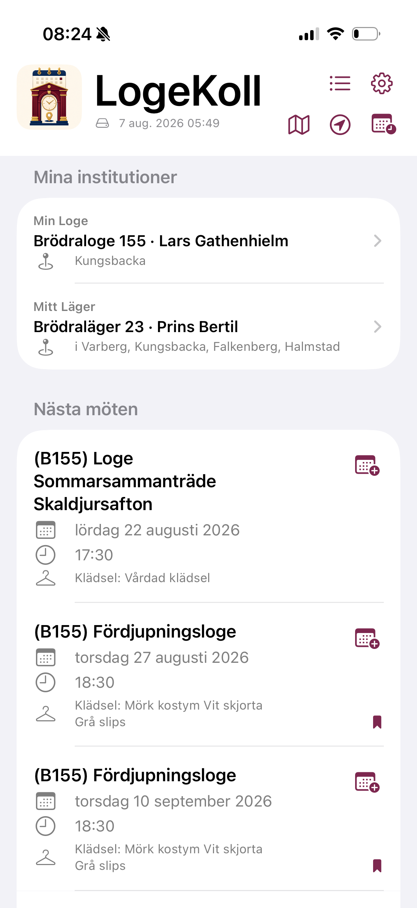
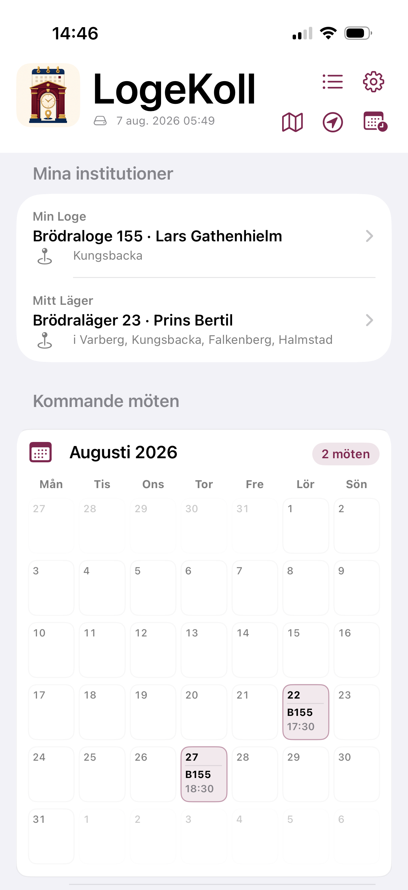
Hitta en institution via län, ort eller namn.
I områdessökningen är Sverige förvalt som land. Välj län för att se institutioner i området och förfina vid behov sökningen med en ort.
- Filtrera på Alla, Brödra eller Rebecka.
- Använd fritextfältet för att söka efter institutionsnamn eller nummer.
- Tryck på en träff för att öppna institutionens detaljsida.
Du behöver alltså inte känna till en institutions exakta namn för att hitta rätt.
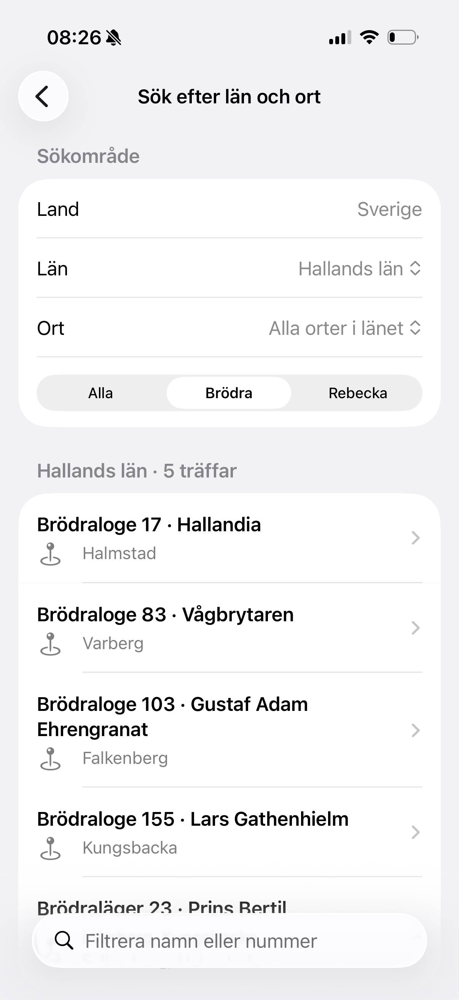
Vad finns nära dig – och vilka möten är på gång?
Loger nära mig
Du väljer själv när appen ska använda din position genom att trycka på Aktuell plats. LogeKoll beräknar avstånd till institutioner som passar din valda medlemsprofil och sorterar de närmaste först.
Avstånd visas i meter eller kilometer. Resultat kan dessutom markeras när institutionen har möte i dag eller senare under veckan.
Möten i dag eller i morgon nära mig
En separat funktion visar möten som äger rum i dag eller i morgon i närheten. De sorteras efter avstånd och visar mötestitel, institution, datum, tid och eventuell klädsel.
Från mötesresultatet kan du spara mötet direkt eller gå vidare till kalendern utan att först behöva välja en institution.
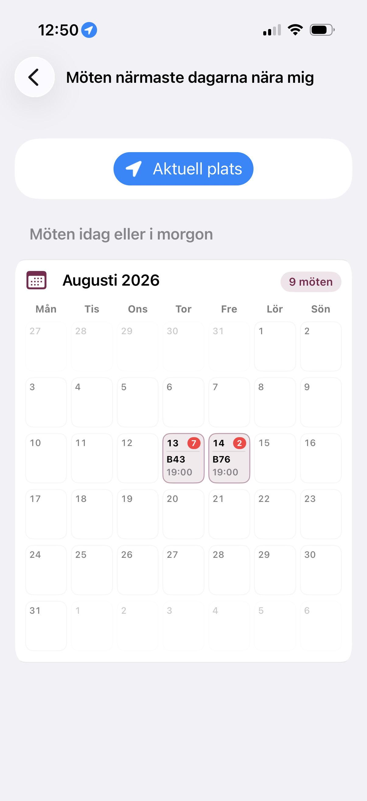
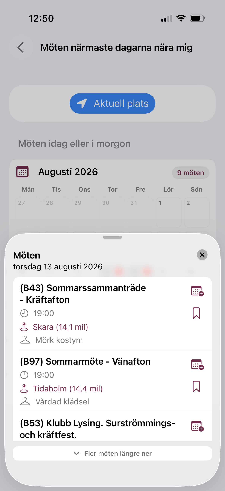
All information om en loge – med kartan ett tryck bort.
Här finns både detaljsidan och kartbilden från Word-dokumentet.
Institutionens egen informationssida
Varje institution har en detaljsida med uppgifter som benämning, namn, kategori, distrikt, säte och län, när dessa finns i databasen. En länk till ursprungssidan kan också finnas.
Adress, karta och kontakt
- Tryck på en besöksadress för att öppna platsen i telefonens kartfunktion.
- LogeKoll kan positionsbestämma en publicerad adress.
- Ring ett publicerat telefonnummer från appen, med bekräftelse före samtalet.
- Skapa e-post med mottagare och relevant ämne förifyllt.
- Se kommande möten och gå direkt till kalendern eller Mina möten.
Kartbilden är ett exempel på hur ett besök från institutionens detaljsida kan öppnas i telefonens kartfunktion.
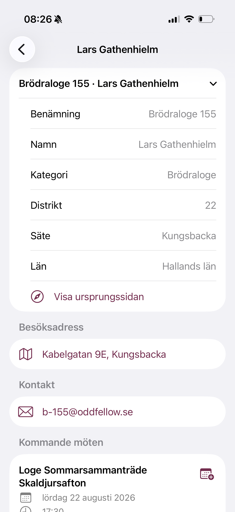
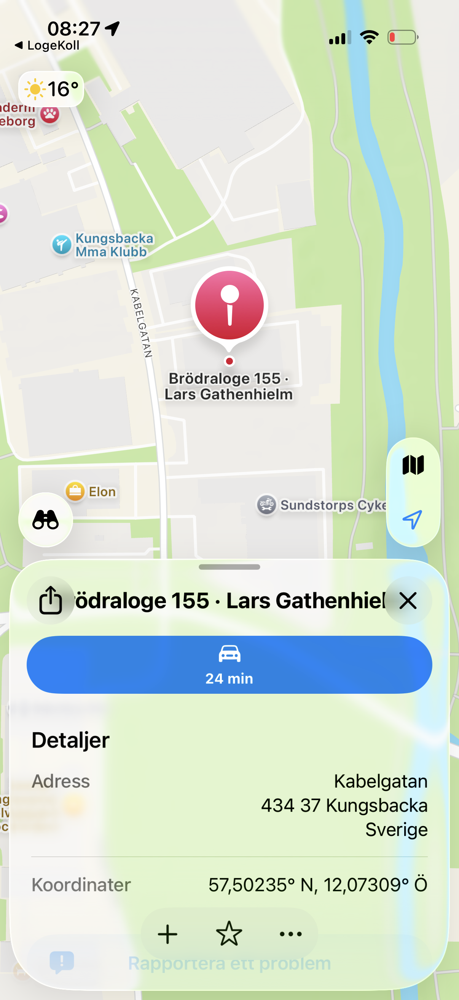
Spara dina möten. Förbered kalendern. Få påminnelser.
Mina möten
Spara möten med en svepgest från startsidan, institutionsdetaljer eller närhetssökningen. De sparade mötena samlas i Mina möten och sorteras efter datum. Du kan ta bort dem med en motsvarande svepgest, och passerade daterade möten rensas automatiskt.
Telefonens kalender
Kalenderknappen öppnar den vanliga vyn för att skapa eller redigera en kalenderhändelse. LogeKoll fyller i mötestitel tillsammans med institutionens namn, plats och starttid. Klädsel och källhänvisning förs till anteckningsfältet när uppgifterna finns.
En föreslagen sluttid två timmar efter start kan justeras innan du sparar händelsen.
Två lokala påminnelser
Efter att du aktiverat påminnelser i Inställningar och gett appen tillstånd att avisera kan du slå på klockan för ett sparat möte och skapa upp till två lokala aviseringar.
- Första aviseringen: 0–14 dagar och 0–23 timmar före mötet.
- Andra aviseringen: 1–72 timmar före mötet.
- Standard: en dag respektive två timmar före mötet.
Tidsintervallen ovan återger den granskade version som beskrivs i Word-dokumentet.
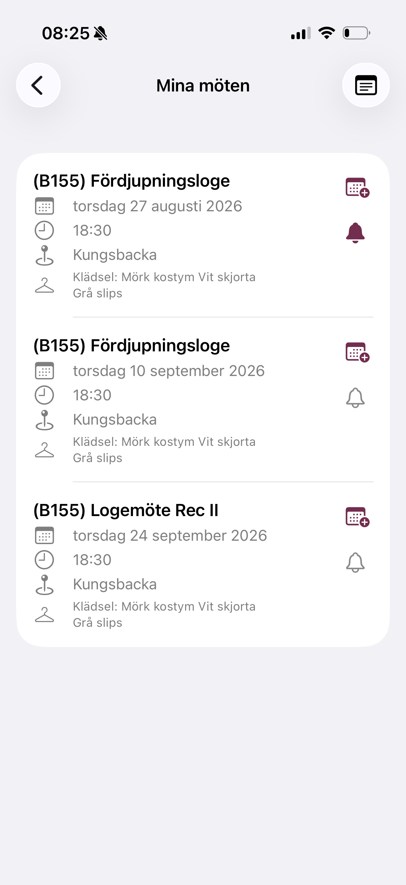
Ett skyddat utrymme för egna anteckningar.
Från Mina möten når du Mina anteckningar. Här kan du skriva egen text med stöd för fetstil, kursiv och understrykning, spara med en tydlig knapp och låsa anteckningen igen.
Skydd med telefonens egen säkerhet
- Öppning sker med telefonens biometriska identifiering eller enhetens kod.
- Anteckningsfilen lagras krypterat på telefonen.
- Krypteringsnyckeln skyddas i enhetens säkra nyckellagring.
- Det krävs inget separat LogeKoll-konto eller extra lösenord.
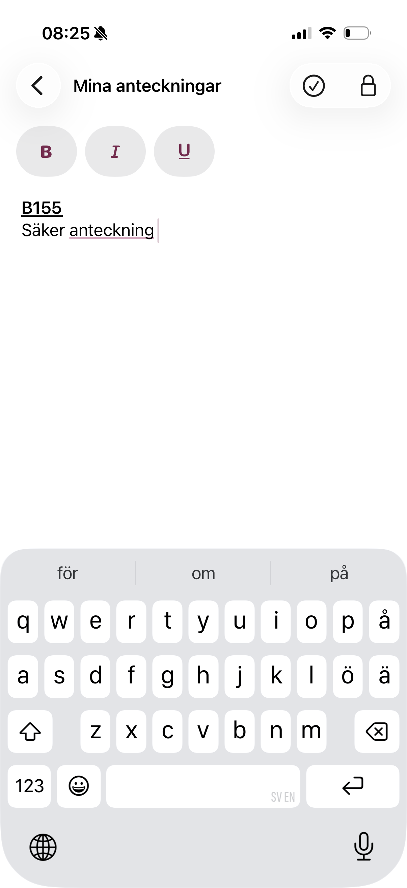
Hitta information även med telefonens genvägar.
På iPhone: Siri och Genvägar
I den granskade iPhone-versionen kan plattformsintegrerad sökning aktiveras eller inaktiveras i Inställningar. Två genvägar ingår: Sök institution och Sök möte. De kan användas via Siri eller appen Genvägar utan att LogeKoll behöver vara öppet på skärmen.
Institutionssökningen kan matcha namn, nummer och ort. Mötesökningen kan matcha mötestitel, institution och ort bland kommande möten. Siri kan presentera en kort träfflista och läsa upp bland annat institution, plats och datum.
Respekterar din profil
Genvägarna använder samma medlemsinställningar som appens sökfunktioner.
Hur motsvarande systemintegration presenteras på Android kan skilja sig från iPhone.
Anpassa LogeKoll efter dina behov.
På inställningssidan väljer du medlemstyp: Båda, Broder eller Syster samt Min Loge och Mitt Läger. Listorna är sökbara efter namn, nummer eller ort, och valda institutioner kan tas bort med separata knappar.
- Välj om sökfunktionerna ska visas som Lista eller Ikoner.
- Anpassa visningen av kommande möten där alternativet finns.
- Slå på eller av plattformsintegrerad sökning.
- Aktivera påminnelser och välj hur långt före ett möte de ska ges.
- Se databasstatus, senaste uppdatering och support-/integritetslänkar.
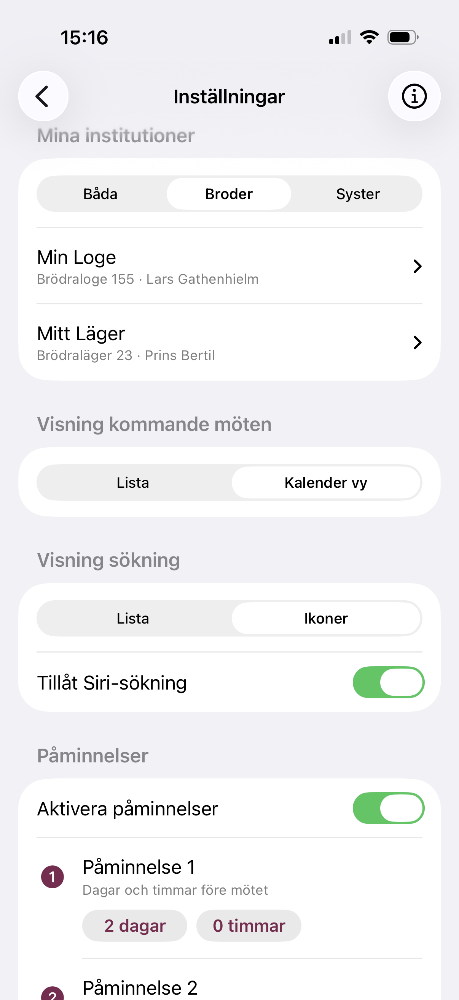
Aktuell information – med en lokal reserv.
LogeKoll hämtar den publika institutions- och mötesdatabasen via internet och behåller samtidigt en lokal kopia. Om en nätverkshämtning misslyckas försöker appen använda den lokala cachen, så att grundläggande information kan finnas kvar även vid tillfälliga problem.
- Automatisk daglig synkning är aktiverad som standard och kan stängas av.
- Tryck på Synka för att begära en manuell uppdatering.
- Se vilken datakälla som används, när databasen uppdaterades och eventuella varningar.
- Bestäm efter hur många dagar appen ska varna om databasen blivit för gammal.
- På startsidan visas senaste uppdatering, och informationen kan uppdateras med nedåtdragning.
- Support och den fullständiga integritetspolicyn nås från inställningssidan.
En synkning kan ge nyare information än den databas som ursprungligen följde med appen.
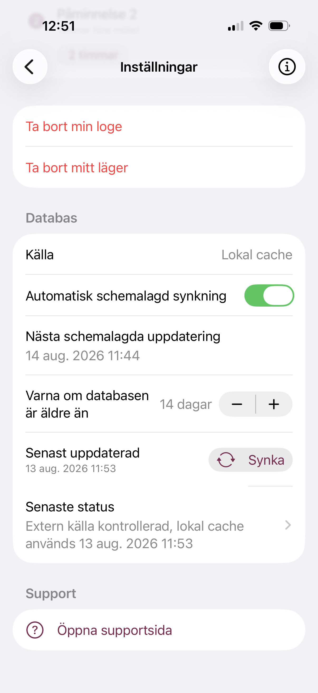
Dina uppgifter hanteras med tydliga val.
Inget användarkonto
Medlemstyp, Min Loge, Mitt Läger, sökvisning och inställningar för genvägar sparas lokalt på telefonen. Sparade möten lagras som lokala referenser och anteckningarna är krypterade.
Position bara när du begär den
Appen ber om aktuell position först när du själv startar en Nära mig-funktion. Positionen hålls i minnet för den aktuella sökningen och skrivs inte till LogeKolls databas.
Adress och karttjänster
Koordinater för offentliga institutionsadresser kan cachelagras lokalt för snabbare avståndsberäkning. Adressuppgifter kan skickas till mobilplattformens kart- och geokodningstjänster.
Publik informationskälla
Den publika mötesdatabasen hämtas från den nätverkskälla som appen är konfigurerad för. Läs mer om uppgifter och tjänster i integritetspolicyn.
Tydligt i vardagen – ljust eller mörkt.
Gränssnittet bygger på vanliga mobilmönster: grupperade listor, tydliga rubriker, svepgester, kartor, kalender, sök och igenkännliga symboler för bokmärke, klocka, telefon, e-post och inställningar.
Viktiga åtgärder finns nära sitt sammanhang: kalenderknappen på mötesraden, ring- och e-postval på institutionssidan och svepgester för att spara eller ta bort möten.
Appen har stöd för ljust och mörkt läge. Appikonen förenar institutionsbyggnad, kalender, klocka och platsmarkör, och projektet har en ljus och en mörk ikonvariant.
Börja med dina egna institutioner
Redo att få bättre koll?
Välj medlemstyp, Min Loge och vid behov Mitt Läger. Börja sedan med de kommande mötena på startsidan.